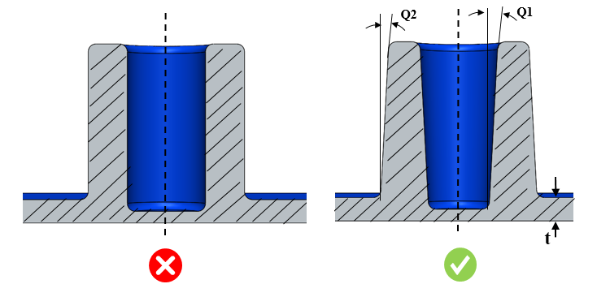

ボスの外周面（OD）および中空穴（ID）における最小抜き勾配は、指定された値以上である必要があります。
ボス形状の外径には、金型から部品を容易に離型するために最小の抜き勾配角が必要です。
場合によっては、ファスナーや他の嵌合部品と適切にかみ合わせるために、ボス形状内の中空穴にも最小の抜き勾配角が必要となります。
一般的な指針として、ボスの外周面（OD）における最小抜き勾配は 0.5 度以上とすることが推奨されます。また、ボスの中空穴（ID）における最小抜き勾配は 0.25 度以上とすることが推奨されます。
DFMPro はボス形状を識別し、ボスの外周面（OD）および中空穴（ID）に設定されている抜き勾配角をチェックします。これらの抜き勾配値は、構成された値と照合して検証されます。
ユーザーは、デフォルトで構成されている値を編集することができます。
ルール UI では、材料の一覧が Map Material から取得され、ユーザーは材料およびそれぞれの値を構成することができます。
材料およびその値を構成した後、ユーザーは Ctrl+M コマンドを使用して、ルール UI 上で材料グループおよびグレードとともに構成済み材料の一覧をフィルタ表示できます。同じキー（Ctrl+M）を使用してフィルタをリセットできます。

ここでは、
t = 公称肉厚
Q1 = ボス ID の最小抜き勾配
Q2 = ボス OD の最小抜き勾配